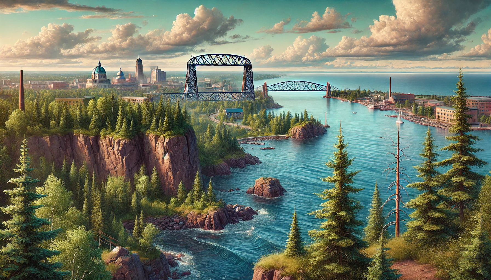
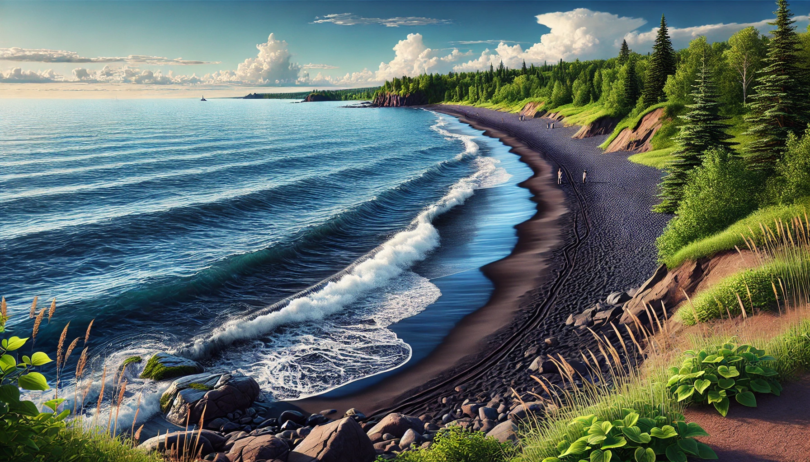
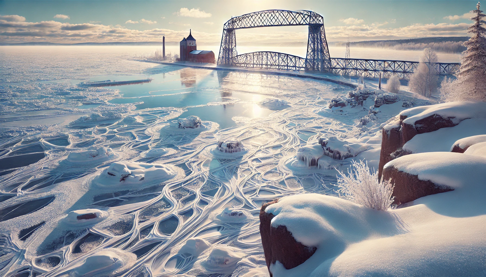

My Projects
Current Project: Personal Portfolio Website
Personal Portfolio Website Development
HTML
CSS
JavaScript
API Integration
This website represents my semester project showcasing web development skills including:
- Responsive design implementation
- Interactive features like the game page
- API integrations for weather and activities
- Music player functionality
- AI-generated content integration
UMD and Duluth
Life at UMD
A creative 10-second showcase highlighting what I love most about UMD and the beautiful city of Duluth. This video demonstrates my ability to create engaging content using AI tools while capturing the essence of our university community.
AI-Generated Media Projects
Technology and Innovation Series
AI Generation
Digital Art
Video Production



AI-Generated Videos
A collection of AI-generated media exploring themes of technology and innovation. This series demonstrates my ability to leverage AI tools for creative content generation while maintaining a cohesive narrative about technological advancement.